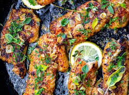

Cajun Seared Fish

Description
A mouth watering white fish covered in cajun spices, then seared in a pan will leave you with a taste of Louisiana.
Prep Time: 15 minutes | Cooking Time: 7 minutes | Servings: 4
Ingredients
- 1 1/2 pounds of a white fish of your choice
- 1 tbs of unsalted butter or olive oil
Homemade Cajun Seasoning
- 1/2 tbs of Smoked Paprika or Regular Paprika
- 1/2 tsp Ground White Pepper
- 1/2 tsp Black Pepper
- 1/2 tsp Onion Powder
- 1/2 tsp Garlic Powder
- 1/4 tsp Dried Thyme
- 1/4 tsp Ground Mustard Powder
Cooking Instructions
- Dry the fish completely and let the fish come into room temperature for 15 minutes.
- Combine spices into a bowl and rub the spices into both sides of the fish.
- Heat a cast iron or stainless-steel skillet on medium-high heat. Add butter.
- Add fish to the pan and cook for 2-3 minutes on both sides. The fish will turn opaque at the center and will flake with a fork when it is finished cooking.
- Remove the fish and set aside to cool
Nutrition
Serving: 6oz | Calories: 167kcal | Carbs: 2g | Protein: 24g | Fat: 8g
Recipe Credits
Original Creator Recipe